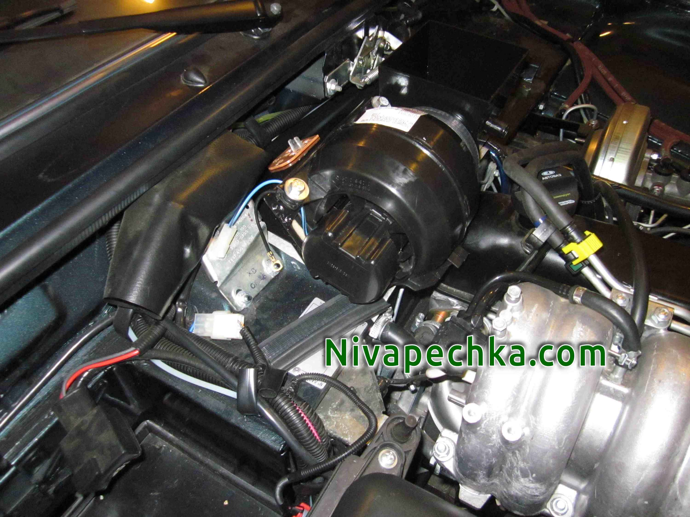

Устанавливаем вентилятор 2108 в Ниву своими руками в окрашеный корпус КОМПАКТ без подсветки на машине.
Обновлено:
Так выглядит установленный в Ниву с мотором вентилятора 2108 корпус КОМПАКТ из комплекта МАКСИ КОМПАКТ. Этот комплект подходит для установки вентилятора 2108 и на карбюраторную Ниву и на инжекторную Ниву любого года выпуска.

При установке даже своими руками мотора печки 2108 в Ниву вам не нужно допиливать никаких кузовных элементов, запаска устанавливается на свое место
капот закрывается идеально! Без всяких дополнительных регулировок замка капота! Отличная вентиляция салона в Ниве и стабильное тепло даже в лютый мороз.
Испытано в Сибири.
Нива печка 2108 окрашеный корпус КОМПАКТ без подсветки на машине